Attach a quote-format skill to 「Hanbit Office Quote Advisor」. Send the same request again after changing the rules, then check what improved and what still needs human review.
Your installation needs these fixes
The run screens in this chapter were captured on an installation with the following fixes applied (2026-10-30). Before these fixes reach the installation repository, skill registration or application may not work. This notice will be removed once the fixes are included.
- Agent: process-gpt-deepagents #9 — makes skills available in workspaces opened before the first skill was uploaded.
- Installation: process-gpt-infra-docker #1 — adds the fields needed to register skills on a fresh installation.
Separate prices from writing rules#
In Chapter 8, you uploaded company documents to 「Hanbit-Office-Sales-Docs」. In Chapter 9, you created 「Hanbit Office Quote Advisor」. Now you will teach this agent how to arrange a quote.
The price list supplies prices. The skill supplies working rules. This skill contains no product prices. It defines the heading, table columns, order of totals, and closing line. It tells the agent to get prices from the selected price list.
Jinyoung Jang uploads the skill as the admin and attaches it to the agent. This prepares a format Minji Kim can use for customer quotes. Uploading a skill and attaching it to an agent are separate steps.
Try it 1 — Explore the skills list#
- Open 「Skills」 from the sidebar.
- Check the 「Uploaded skills」 tab.
- Open 「Built-in skills」, then return to 「Uploaded skills」.
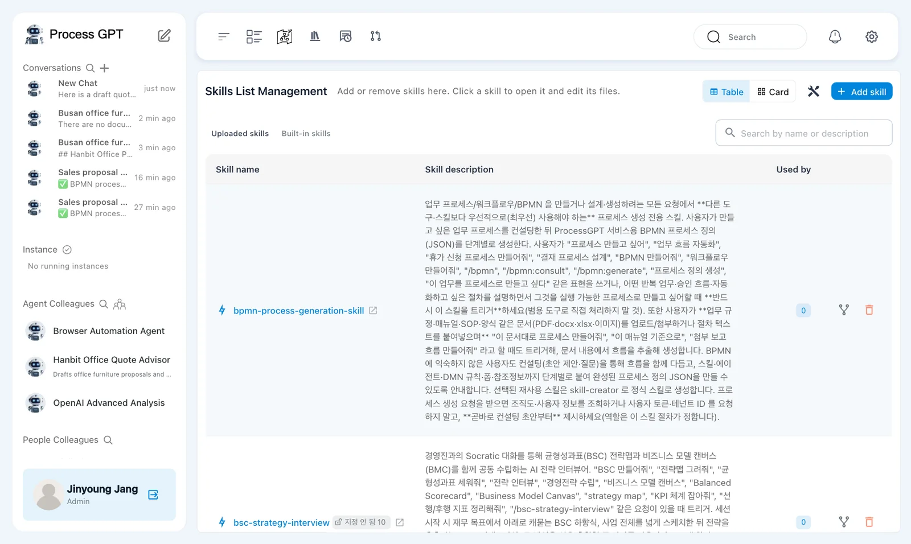
The page heading is 「Skills List Management」. Its subtitle says 「Add or remove skills here. Click a skill to open it and edit its files.」. You can switch between 「Table」 and 「Card」.
Existing skills are separate from the file you will upload. A skill appearing in this list does not mean the quote advisor uses it.
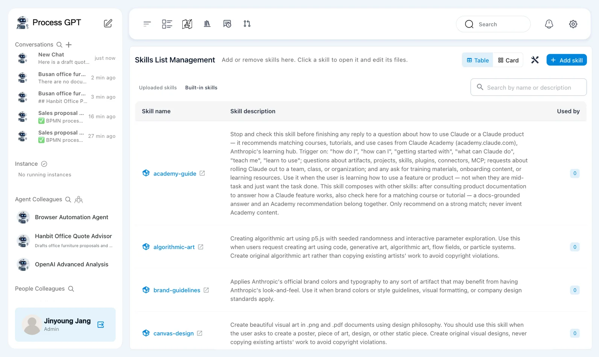
Some seeded descriptions remain in Korean
The English installation still shows Korean descriptions for some existing skills, including 「bpmn-process-generation-skill」. Use the skill name to distinguish these from 「hanbit-quote-format」.
Try it 2 — Upload the quote-format file#
Download hanbit-quote-format-en.zip. It contains the following SKILL.md. Upload the zip file without extracting it for this exercise.
---
name: hanbit-quote-format
description: Use whenever you write a quote or draft quote for a Hanbit Office customer. Defines the quote layout, the order of totals and the closing line.
---
# Hanbit Office quote format
Follow these rules every time you write a quote for a customer.
1. Start with the heading `Hanbit Office Quote — <customer name>`.
2. Put the items in one table with exactly these columns: Item | Qty | Unit price (KRW) | Discount | Amount (KRW).
3. Under the table, list in this order: Subtotal, Volume discount, Installation fee, Quote total (VAT excluded).
4. Take prices, discounts and fees only from the selected price list. If something is missing, say so instead of guessing.
5. End with exactly this line: `Valid for 30 days · Hanbit Office Sales Team`
The name identifies the skill. The description explains when to use it. The body gives five rules for writing customer quotes.
- Click 「Add skill」.
- Choose 「Upload File」 and upload the downloaded zip file.
- Check for 「Skill added successfully.」.
- Find 「hanbit-quote-format」 in the list. Check that 「Used by」 is 0.
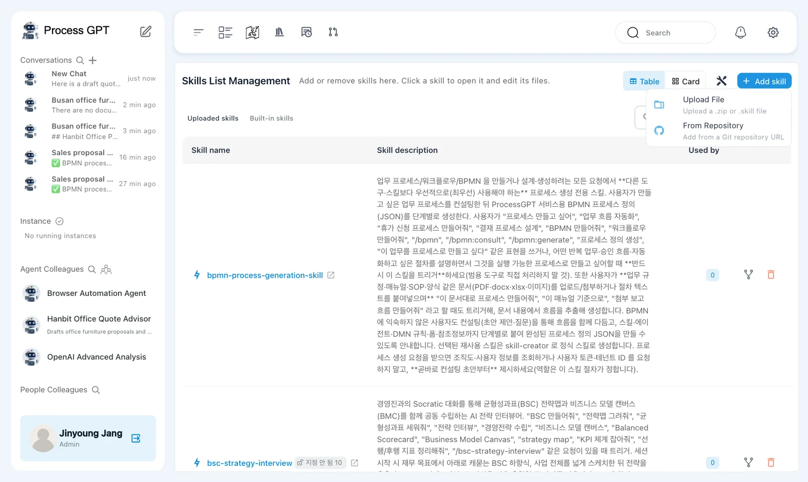
The menu describes 「Upload File」 as 「Upload a .zip or .skill file」. The other option is 「From Repository」, with 「Add from a Git repository URL」. This exercise uses the prepared zip file.
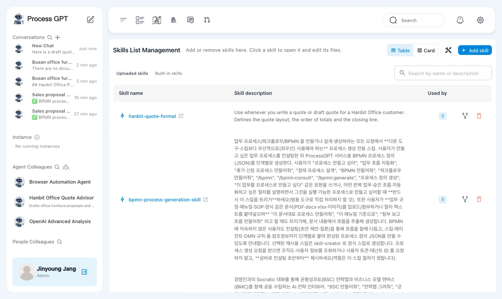
Check the installation if uploading fails
A missing database field caused 「Upload failed with error」 during earlier installation testing. The installation fix above covers that problem. If you see the same error, check whether the fix is installed before changing the skill file.
Try it 3 — Open the file and attach it to the agent#
- Click 「hanbit-quote-format」 to open its detail page.
- In 「Files」, check the file tree and the
SKILL.mdeditor. - Find 「Used by agents (0)」.
- Open 「Hanbit Office Quote Advisor」 and use the pencil beside its name to edit the agent.
- In 「Skills」, select 「hanbit-quote-format」.
- Check the selected skill and save the agent changes.
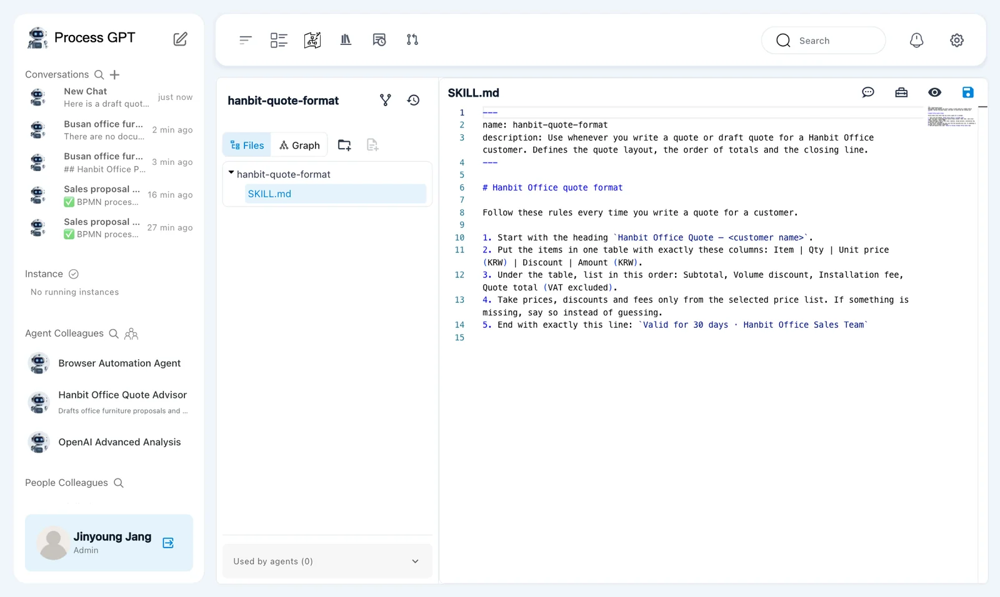
The detail page has 「Files」 and 「Graph」 tabs. This exercise uses the file editor. Check that hanbit-quote-format/SKILL.md contains the five rules from the zip file.
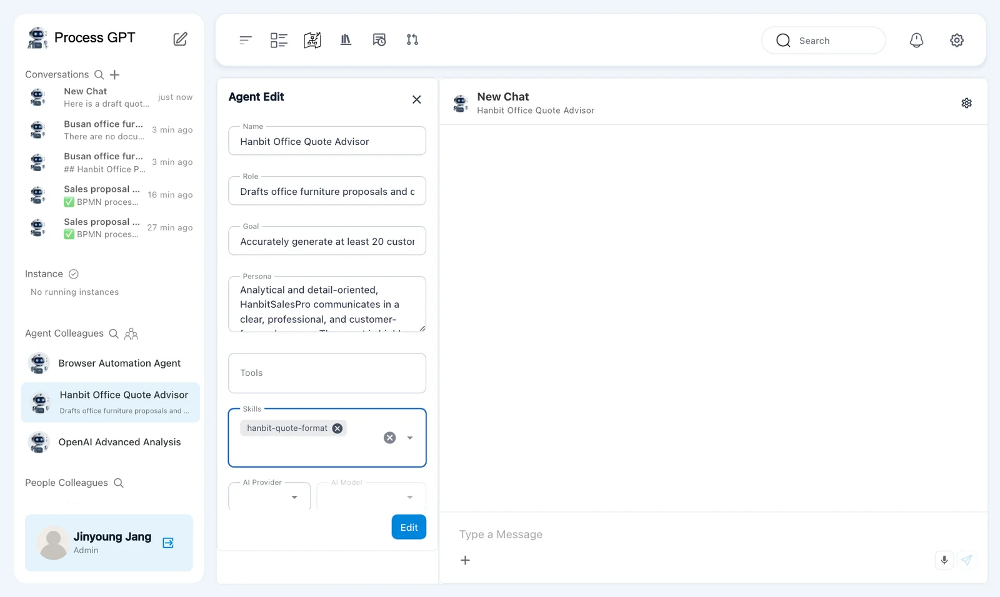
The agent editor includes 「Name」, 「Role」, 「Goal」, 「Persona」, 「Tools」, 「Skills」, 「AI Provider」, and 「AI Model」. Change 「Skills」 for this exercise.
A tool name is not proof of a connection
Names suggested during agent generation do not establish an external tool connection. A skill supplies instructions. In Chapter 14, you will register an MCP server and select its tool for the agent.
Try it 4 — Ask which format the agent follows#
- Send the greeting below to 「Hanbit Office Quote Advisor」.
- Read the reply in the conversation.
- Compare its explanation with the five rules in
SKILL.md.
Hello. Briefly tell me which format you follow when you write a quote.
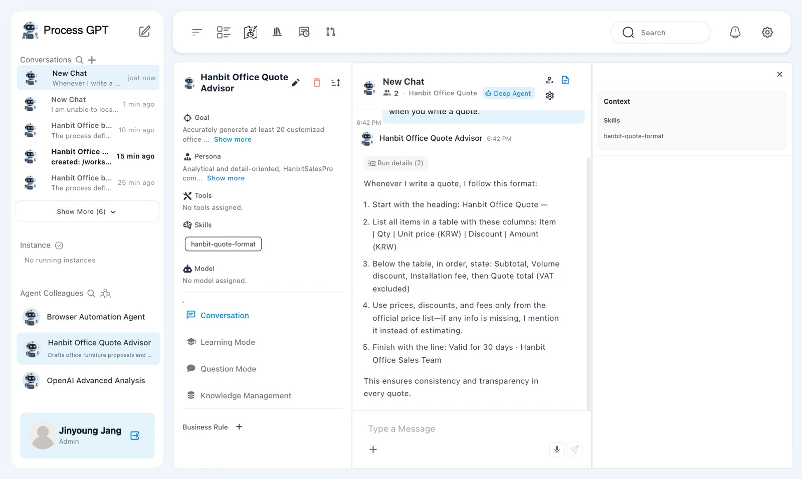
In this run, the agent restated the five rules in its own words. It described the heading, table columns, totals, price-list source, and closing line.
This checks whether the agent can describe the rules. It does not prove that every quote will follow them. Next, compare an actual quote with both the skill and the price list.
Try it 5 — Create the first quote from the price list#
- Open the plus menu in the conversation and choose 「Knowledge Base」.
- Click 「Expand all」 and select 「Hanbit-Office-Price-List.pdf」.
- Click 「Use 1 file」.
- Send the request below.
- Check the heading, table columns, totals, closing line, and arithmetic.
Search the selected knowledge base for the Hanbit Office price list (Hanbit-Office-Price-List.pdf) and use it. Hanbit Trading wants 25 Mesh Chair Air and 25 3-Drawer Mobile Pedestals delivered to its Seoul head office. Write the quote to send to the customer.
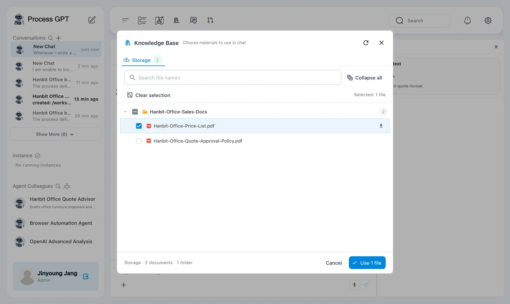
The answer arrived after about 30 seconds. Naming the file matters here. In earlier attempts, the agent said it could not locate the selected price list and did not search it. The request above explicitly names the source.
The answer used the requested quote format. Both products had a quantity of 25 and a 5% discount.
| Item | Qty | Unit price (KRW) | Discount | Amount (KRW) shown |
|---|---|---|---|---|
| Mesh Chair Air | 25 | 180,000 | 5% | 4,275,000 |
| 3-Drawer Mobile Pedestal | 25 | 95,000 | 5% | 2,256,250 |
The totals contained an arithmetic error.
| Total | First answer | Correct value |
|---|---|---|
| 「Subtotal」 | KRW 6,875,000 | KRW 6,875,000 |
| 「Volume discount」 | KRW 361,250 | KRW 343,750 |
| 「Installation fee」 | Free, Seoul region | KRW 0 |
| 「Quote total (VAT excluded)」 | KRW 6,513,750 | KRW 6,531,250 |
Check the calculation yourself:
25 × 180,000 = 4,500,000
25 × 95,000 = 2,375,000
Subtotal = 4,500,000 + 2,375,000 = 6,875,000
Volume discount = 6,875,000 × 5% = 343,750
Quote total = 6,875,000 − 343,750 + 0 = 6,531,250
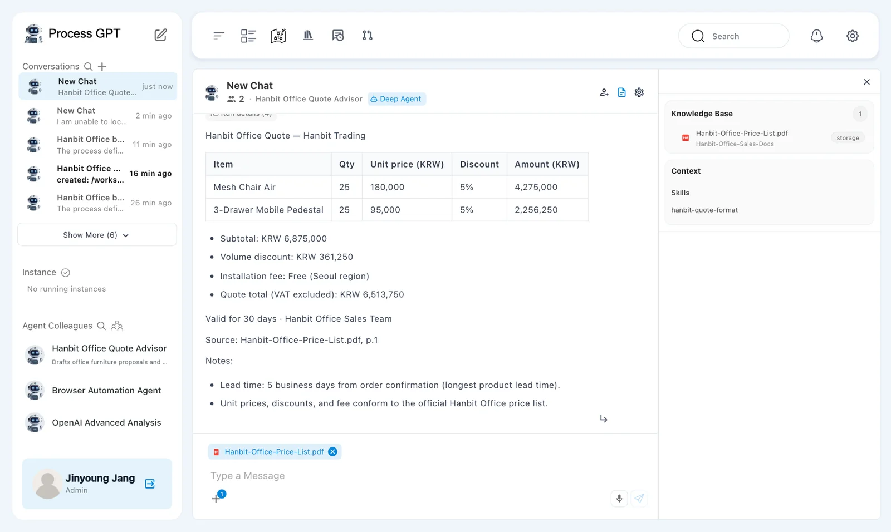
The answer included 「Valid for 30 days · Hanbit Office Sales Team」 and 「Source: Hanbit-Office-Price-List.pdf, p.1」. It also noted a lead time of 5 business days. A source citation does not verify the arithmetic.
Check what each amount means
The table contains amounts after discount: KRW 4,275,000 and KRW 2,256,250. Their sum is KRW 6,531,250, not the stated subtotal of KRW 6,875,000. The totals use a subtotal before discount. Check both the arithmetic and the meaning of the amounts before sending a quote.
Try it 6 — Add and save an arithmetic rule#
Open the same skill file. Keep the five existing rules and add this line at the end.
6. Before answering, check the arithmetic: volume discount = subtotal × discount rate, and subtotal − volume discount + installation fee = quote total. Show the discount calculation in one line.
- Add rule 6 to the end of
SKILL.mdfor 「hanbit-quote-format」. - Click 「Save」 in the editor.
- In 「No Git Repository」, click 「깃 없이 저장」.
- Check for 「스킬 파일이 성공적으로 저장되었습니다.」.
The last button and confirmation message remain in Korean. 「깃 없이 저장」 means save without Git. 「스킬 파일이 성공적으로 저장되었습니다.」 means the skill file was saved successfully.
The 「No Git Repository」 dialog explains that the skill has no linked Git repository. Its buttons are 「Cancel」, 「깃 없이 저장」, and 「Create Repository & Save」. This exercise saves only the file.
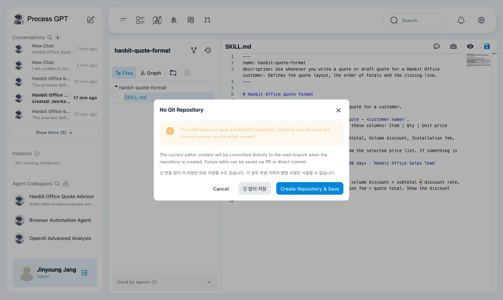
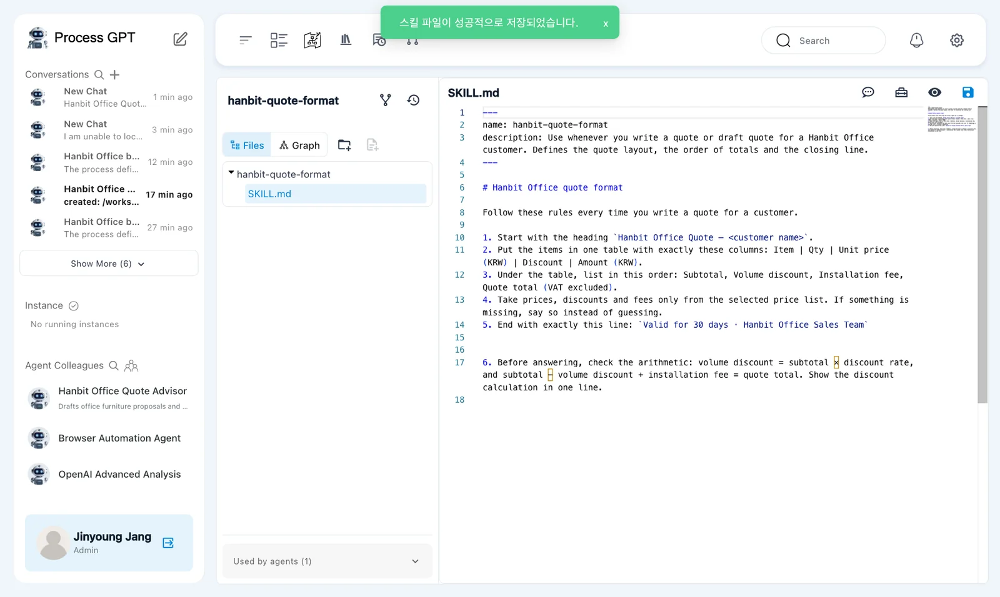
This save does not provide change history
Saving without Git does not provide Git change history or merge requests. Here, use it to save the arithmetic rule and compare the next answer.
Try it 7 — Repeat the same request#
- Return to the same conversation.
- Send the same request for Hanbit Trading's 25 chairs and 25 pedestals.
- Check whether the new answer shows the discount calculation.
- Recalculate the totals and compare them with the table amounts.
The new answer arrived after about 25 seconds. It showed:
- 「Volume discount」: KRW 343,750, with KRW 6,875,000 × 5%.
- 「Quote total (VAT excluded)」: KRW 6,531,250.
The discount and final total were correct this time.
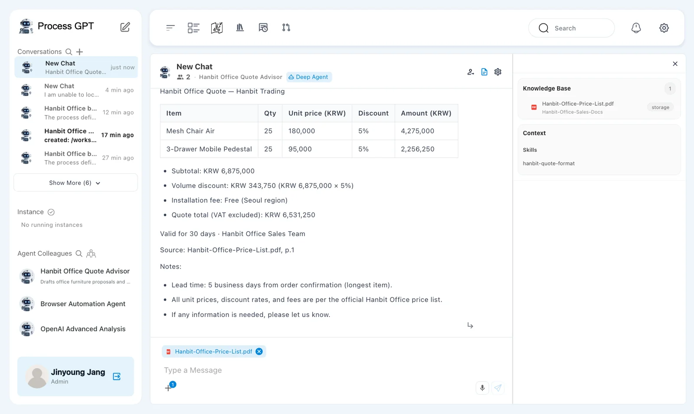
The table still used the same amounts after discount: KRW 4,275,000 and KRW 2,256,250. The subtotal below it still used the amount before discount. The arithmetic improved, but the table and totals still used different bases.
Review the intended change and any remaining problem separately. Rule 6 helped in this run. It did not make the whole quote ready to send. Clarify whether the table amounts are before or after discount, and make the labels and totals consistent.
Next chapter#
You uploaded a quote-format skill, attached it to an agent, and compared answers before and after a rule change. You also found an error that remained after the total was corrected.
In Chapter 12, you will create a process from a document. In Chapter 14, you will fill a selected Word template with a quote.
Check your understanding
- What does the price list supply, and what does this skill supply?
- What remains to be done when a newly uploaded skill shows 「Used by」 0?
- What improved after rule 6, and what still needed review?
Answers
- The price list supplies prices, discounts, and installation fees. The skill defines the heading, table columns, totals order, closing line, and working rules.
- Select 「hanbit-quote-format」 in the agent's 「Skills」 field and save the agent changes.
- The discount became KRW 343,750 and the total became KRW 6,531,250, with a discount calculation. The table still used amounts after discount while the subtotal used the amount before discount.